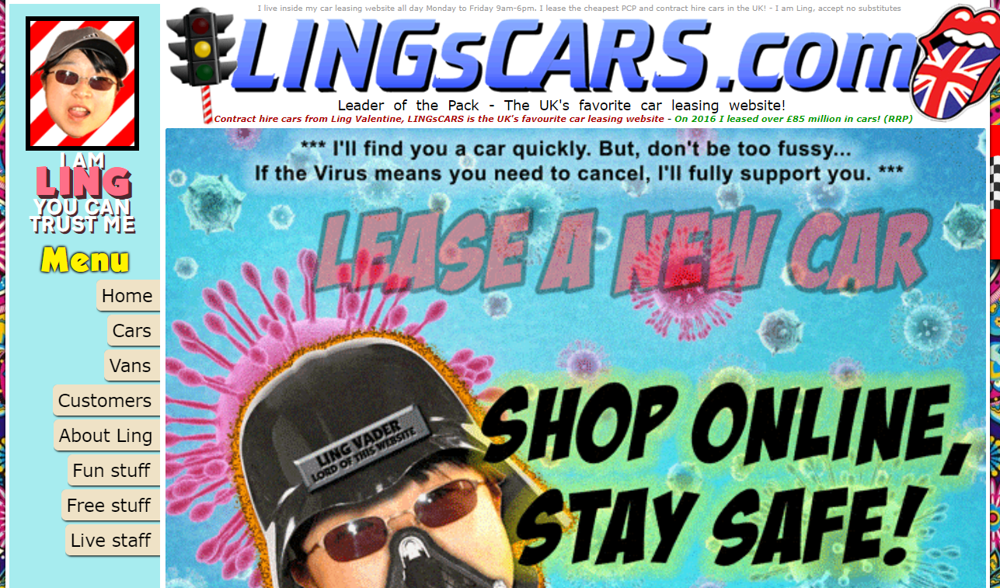

Usability Mistakes
Reference: Common Usability Blunders

Pagination Used for the Wrong Purpose
Pagination is commonly used for the wrong purpose. I see it most on click-bait articles that have seemingly always have a vague “surprise” at the end. Those articles make you click “Next Page” about 20 times so that they increase page views and the number of ads seen. If there’s ever an ad on Facebook that mentions an oddity from every U.S. state, I expect 51 pages: 1 for the introduction, and 50 for each state. But even the less obvious websites do that too. Legitimate articles sometimes turn the content into 2 pages when they did not need to. I absolutely think this is a usability issue because it wastes time and frustrates the user.
Content that is Difficult to Scan
The term “copy” means the written material that guides people around a web page. To have good copy, the items on the page that users want to see must be in the forefront, easy to find, and where they expect to find them. These items should highlight the most important parts of the website and make it easy to navigate and decide where the user should go. I think this is one of the biggest parts of usability. There is a lot of research done to know where most of people’s eyes land on the screen when they are looking for a certain feature, functionality, description, or pointer. Before seeing this article, did not know of this concept, but it makes so much sense. It is one of those things that most people wouldn’t know about, but everyone would know if it isn’t there, or not properly done.
Long Registration Forms
As a student graduating in a few months, I am sick of filling out job application forms that ask for everything that is already on the resume I attached. So when I see long registration forms that are asking for information that they don’t need, I am tempted to leave that site and find what I need elsewhere that makes it more accessible. Even making an account with just an email and password can be frustrating when I am in a rush to get to something. Long forms make me especially grateful for whoever thought of autocomplete on browsers.